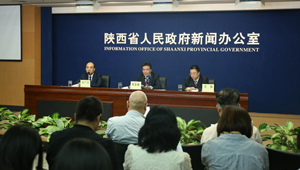
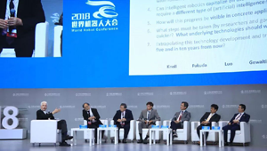
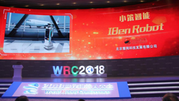
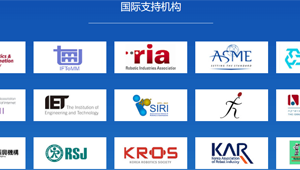
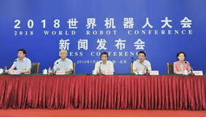
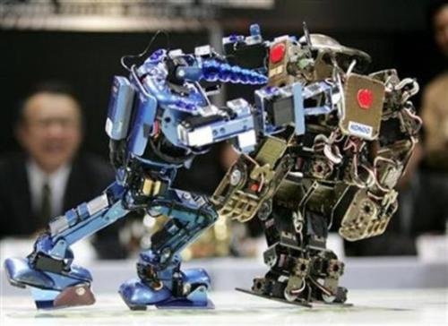

-

陕西军民融合产业联盟建设初见成效
为推动陕西省军民融合产业创新发展，2017年以来，陕西省国防科工办先后围绕先进复合材料、工业机器人、智能制造和先进控制技术、导航产业、光电信息、电子信息、橡胶技术、增材制造、高校创新、智慧海洋、航空零部件加工与装配制造及高新人才培养等领域，指导组建了12个军民融合产业(人才)联盟，积极推动多个领域的技术提升和产业发展。各联盟成立以来，在推动技术合
点击查看 -

2018世界机器人大会：机器人正走进生活的各个角落
工业机器人迄今仍占机器人的大多数，尤其集中在汽车装配、电子制造和金属加工的流水线上。大多数工业机器人从事搬运和焊接，还用于码垛、包装、喷涂、切割和净室。中日韩美四国，占了全球工业机器人市场的四分之三。中国从2013年成为工业机器人第一大市场，如今占全球需求的三分之一。且增速连年世界第一。预计未来几年仍将保持旺盛。
点击查看 -

北京“选手”闪亮机器人大会 上演了高科技年度汇演
国际上唯一能够覆盖创伤及脊柱全节段手术的骨科手术机器人“天玑”；拥有准确率高达98%的人脸识别技术的优必选Walker人形机器人；获得国际设计大奖的“选美皇后”T5协作机械臂；工业机器人“关节”关键零部件……在世界机器人大会上，以北京机器人选手为代表，国产机器人产业带着诸多填补空白、赶超世界先进水平的成果，上演了一场高科技年度汇演。
点击查看 -
展望机器人行业的前景与趋势：与人工智能深度融合
参展商在2018世界机器人大会上展示一款模仿蝙蝠的仿生机器人。 本报记者 赵 晶摄 左图为2018世界机器人大会上，一款会写书法的机器人吸引众多观众围观。右图为家用服务型机器人向观众展示服务技能。本报记者 赵 晶摄 当前，以互联网、大数据、人工智能为代表的新技术与制造业加速融合，促进了智能制造的发展。机器人的新技术、新产品大量涌现，成为新一轮科技革命和产业变革的重要驱动力，既为发展先进制造业提供了重要突破口，也为改善人们生活提供了有力支撑。 那么，当前机器人行业前景如何，未来又有哪些发展趋势？2018世界机器人大会上，来自全球的机器人专家观市场、谈未来。 产业快速发展 从1959年第一台工业机器人在美国问世，到如今机器人被广泛应用于各行各业，不断融入并深刻地改变着人们的生活。在装备制造领域，机械臂凭借强大负重能力和精准的抓取操作正代替着工人的双手；在物流领域，智能仓储机器人和无人搬运车（AGV）不断提高着运输效率；在生活服务领域，家用清洁机器人和服务机器人正成为许多家庭配备的私人保姆和小秘书…… “据国际机器人联合会（IFR）统计分析，2017年全球机器人产业规模已超过250亿美元，增长超过20%，预计2018年将达到300亿美元。”工业和信息化部部长苗圩表示，近
点击查看 -
机器人发展引发伦理讨论：怎样与人当好“合伙人
15日，2018世界机器人大会在北京亦创国际会展中心开幕，展示全世界机器人产业的最新成果。为期3天的论坛上，由机器人发展引发的人工智能伦理和法律话题就是议题之一。 应当建立规范机器人及其使用行为的法律框架 在国际人工智能界，不少人认为人工智能会对人类产生巨大威胁，呼吁不要开发“人工智能自主武器”，警惕人工智能的潜在风险。他们讨论的人工智能，通常指的是未来能自主进化、有类人意识的“强人工智能”，而当前应用的多是擅长单项任务、完成人类指令的“弱人工智能”。即便如此，人工智能的迅速发展带来的挑战已经逐渐显现。 为保护隐私，人们发布照片或视频时，会打上马赛克覆盖人脸，但美国一个研究小组开发了一套机器学习算法，通过训练，神经网络可以识别图像或视频中隐藏的信息。 时下，一些机器人应用到儿童和老人陪护中。中国社会科学院哲学研究所研究员段伟文认为，机器人与儿童对答、给老人喂饭等行为看似简单，长期相处可能使人类对机器倾注感情、产生依赖，有必要设置防止过度依赖机器人的原则。此外，无人驾驶汽车发生交通事故怎么界定责任，医疗外科手术机器人出现意外怎样处置……随着智能机器人深入参与人类生活，专家认为，如何建立规范机器人及其使用行为的法律框架，成为人工智能和机器人产业发展无法回避的重要问题。 清华大学人工智能研究院院长、中科院院士张钹曾表示，当前的人工智能与人类智能本质上是不同的。与人类相比，人工智能系统抗干扰能力差，推广能力弱，甚至可能犯大错。因此使用这样的人工智能系统需要小心。 思考与智能机器的相处模式，控制不良影响 人工智能的发展几经波折，也在不断进化。
点击查看 -
广州这家幼儿园每年16.8万，凭什么？高价幼教就一定好？专家：不一定
人生第一阶段的幼儿教育，越来越受到家长重视，而新修订的《民促法》实施后，非义务教育范畴的民办幼教收费自主权逐步扩大，部分学校学费明显上涨。 近日，记者在越秀区走访发现，一家高价幼教在广州二沙岛现身，每年光幼教部分的收费就要16.8万元，首年优惠也要12.8万元，让人咋舌。幼教收费凭什么这么贵？到底值不值？该幼教机构负责人均作出回应。家长是否认可，则见仁见智了。 收费为什么这么高 这家幼教称有三原因 贵在地理条件？ 幼教机构：地处二沙岛还有三大公园 在二沙岛晴波路的文立方内，一家新开的幼教机构“中黄国际未来教育馆”悄然而起，项目占地3000多平米。
点击查看 -

世界机器人大会开幕多家上市公司携新品亮相
在昨日开幕的世界机器人大会上，多家上市公司的拳头产品纷纷亮相。 据了解，世界机器人大会由北京市政府、工信部、中国科协共同举办，今年是第四届。为期五天的大会将分为博览会、论坛和机器人大赛等多个环节。 据记者统计，在昨日先行开展的机器人博览会上，推出教育类机器人的公司数占了全部服务机器人参展商数量的三分之一。 工信部部长苗圩在开幕式上表示，我国机器人产业规模近五年的平均增速接近30%，2017年行业整体规模达到70亿美元，其中工业机器人的产量超过13万台。下一步，我国机器人产业将继续在核心技术的突破、应用领域的拓展以及法律法规的完善等领域努力。
点击查看 -

亦庄“机”密｜大咖云集智慧碰撞 2018世界机器人大会论坛亮点纷呈
千龙网北京8月13日讯 由北京市人民政府、工业和信息化部、中国科学技术协会主办，中国电子学会、北京市经济和信息化委员会、北京经济技术开发区管委会承办的2018世界机器人大会将于8月15日至19日在北京亦创国际会展中心举行。 大会由论坛、博览会、大赛、地面无人系统活动四大板块组成。国际21家机器人组织作为大会支持机构，300多位国内外专家震撼演讲，160多家机器人企业展示最新展品及应用，16个国家4万多名参赛选手参加比赛，2018世界机器人大会将为您带来一场机器人领域的饕餮盛宴！
点击查看 -

十余省逾500名中小学生来厦角逐2018世界教育机器人大赛
中新网厦门8月5日电 (杨伏山 滕钦祥)世界教育机器人大赛(WER)2018赛季中国赛区南方地区公开赛，5日在厦门万舜·诚毅科技探索中心举办，内地十多个省份的近200支参赛队伍、500多名中小学生同台竞技，参与角逐。 由世界教育机器人大赛中国赛区组委会主办，厦门市集美区科协、厦门欣欣之成智能科技有限公司和万舜·诚毅科技探索中心承办的本次比赛，主要面向小学、初中、高中学生，设有积木教育机器人普及赛、能力挑战赛(电教赛制)、工程创新赛(科协赛制)等赛项，考验参赛选手的编程能力及随机应变能力。
点击查看 -

AI教育“慢”创业
教育，本质上是一个和时间赛跑的事——今天埋下的种子，在孩子们的未来开花结果，所以老话说“十年树木，百年树人”。这就使得教育行业不是一个快行业，而是一个慢行业——投资重，回报周期长，埋首耕耘是必不可少的过程。 但是在今天的创业者眼里，教育却是一个众人追逐的风口，尤其是“AI+教育”领域，科技创新公司雨后春笋一般冒出来，争先恐后推出创新教育产品。敏锐的资本也看好教育，包括中金、腾讯、红杉、经纬、IDG、金沙江创投、鼎晖等近200家纷纷入局。
点击查看